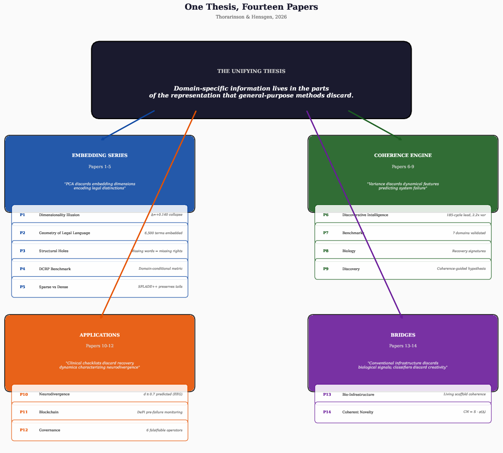
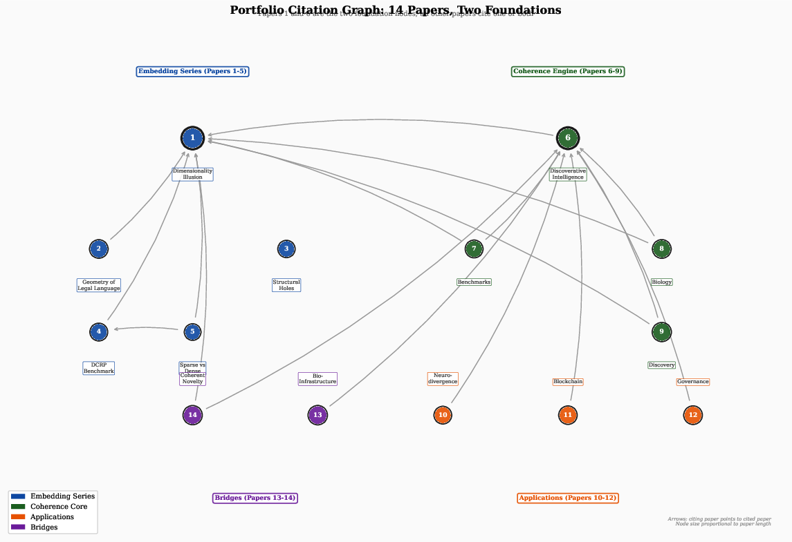

Series 1 — Embedding & Legal NLP
1
The Dimensionality Illusion
2
The Geometry of Legal Language
3
Structural Holes in Legal Embedding Spaces
4
DCRP: Domain-Conditional Retrieval Benchmark
5
Sparse Representations Preserve What Dense PCA Destroys
Series 2 — Coherence Engine
6
From Prediction to Discoverative Intelligence
7
Benchmarking Early Detection
8
Recovery Is Not Return to Baseline
9
From Literature Synthesis to Experimental Hypothesis
Series 3 — Applications
10
Neurodivergence as Coherence Variation
11
Continuous Coherence Monitoring for Blockchain Security
12
Six Falsifiable Operators for Governance Coherence
13
Bio-Integrated Autonomous Infrastructure
14
Coherent Novelty
Series 4 — Koplik Bridge Papers
K1
From Biofield to Bioelectric
K2
Exclusion Zone Water: Separating Findings from Vitalist Claims
K3
Resonance Claims in Esoteric Traditions
K4
Biophotonic Signatures of Plant Vitality
K5
Structural Convergence Across Esoteric Traditions
K6
The Edge of Testability
K7
Food Coherence
Figures

One Thesis. Domain-specific information lives in the parts of the representation that general-purpose methods discard. The unifying argument across all 14 core papers.

Citation Graph. Cross-references between the 14 core papers. Series 1 (embedding) feeds into Series 2 (coherence engine) which enables Series 3 (applications).